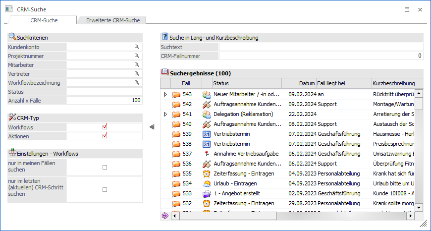
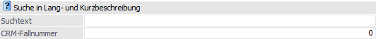
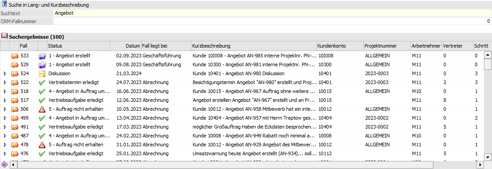
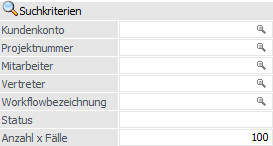
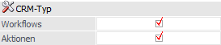
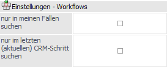
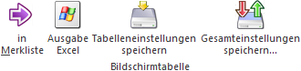

Über die CRM-Suche kann nach Workflows und / oder Aktionsschritten unter Berücksichtigung verschiedenster Selektionsmöglichkeiten gesucht werden. Das Fenster hierbei über den Menüpunkt…
1 CRM
1 CRM-Suche
… oder dem CRM-Ribbon (Button "CRM-Suche") aufgerufen.
Hinweis
Eine erweiterte Suche ist über Register Erweiterte CRM-Suche möglich. Voraussetzung hierfür ist die Anlage einer Suchstrategie für den Bereich "CRM".

Zur schnellen und effizienten Suche stehen diverse Einstellungen und Suchkriterien zur Verfügung. Für mehr Übersichtlichkeit kann der linke Bereich ("Suchkriterien", "CRM-Typ" und "Einstellung - Workflows") mit Hilfe des Buttons ausgeblendet werden (Speicherung erfolgt benutzerspezifisch).
Selektion

Ø Suchtext
An dieser Stelle kann ein Suchbegriff eingegeben werden kann. Wenn die Suche ausgelöst wird, wird nach diesem Text in der Kurz- bzw. in der Langbezeichnung (intern und extern) gesucht.
Ø CRM-Fallnummer
Hier kann eine Fallnummer eingegeben werden, nach der gesucht werden soll.
Suchergebnis

Nach dem Auslösen der Suche werden die gefundenen CRM-Fälle in der Tabelle "Suchergebnisse" angezeigt. Wenn das Suchergebnis eindeutig ist, so wird der gefundene Fall sofort in der Fallansicht dargestellt.
Wenn mehrere Fälle dem Suchergebnis entsprechen, dann werden die Fälle absteigend sortiert in der Tabelle dargestellt, d.h. der neueste Fall wird an erster Stelle angezeigt.
Suchkriterien

Ø Kundenkonto / Projektnummer / Mitarbeiter / Vertreter / Workflowbezeichnung
Durch Angabe der entsprechenden Werte kann die Suche auf ein bestimmtes Konto, eine bestimmte Projektnummer, einen Mitarbeiter, einen Vertreter oder einen speziellen Schritt eingegrenzt werden, d.h. es werden nun noch jene Fälle angezeigt, in denen die Suchkriterien vorkommen.
Ø Status
Die Eingabe eines Wertes kann auf den Status (Name des Workflowschrittes / Aktionsschrittes) eines Falles abgefragt werden, wobei hier die Volltextsuche verwendet wird.
Ø Anzahl x Fälle
Über dieses Feld kann gesteuert werden, wie viele Fälle max. angezeigt werden sollen. Der Standardvorschlag beträgt 20 Fälle.
CRM-Typ

Ø Workflows / Aktionen
Durch Aktivieren der Checkboxen kann festgelegt werden, ob eine Suche nach "Workflows" und / oder "Aktionsschritten" erfolgen soll.
Einstellung - Workflows

Ø nur in meinen Fällen suchen
Durch Aktivieren dieser Option werden alle Fälle angezeigt, für welche der aktuelle Benutzer bzw. die Benutzer-, oder Systemgruppen zuständig ist.
Ø nur im letzten (aktuellen) CRM-Schritt suchen
Diese Option steuert, dass als Suchergebnis immer der letzte Schritt eines Falles angezeigt wird. Bleibt die Option deaktiviert, so würden z.B. bei einem Fall der bereits mehrere Workflowschritte durchlaufen hat, jeder einzelne Schritt als einzelnes Suchergebnis in der Tabelle angezeigt.
Tabellenbuttons

Ø in Merkliste
Durch Anklicken dieses Buttons können alle selektierten (markierten) Fälle (=Zeilen) aus der Tabelle in eine Merkliste / Kampagne übergeben werden.
Ø Ausgabe Excel
Durch Anwahl des Buttons "Ausgabe Excel" wird der Inhalt der Tabelle an Microsoft Excel übergeben.
Ø Tabelleneinstellungen speichern
Die Spalten einer Tabelle können grundsätzlich an beliebige Positionen verschoben, bzw. in der Breite entsprechend angepasst werden. Durch Anwahl des Buttons "Tabelleneinstellungen speichern" werden die Einstellungen benutzerspezifisch gespeichert und bei dem nächsten Aufruf des Programmpunktes wieder vorgeschlagen.
Ø Gesamteinstellungen speichern
Im Gegensatz zu "Tabelleneinstellungen speichern" können mit "Gesamteinstellungen speichern" mehrere Tabellenaufbauten gespeichert und nach Wunsch geladen werden. Zusätzlich werden Sonderfunktionen der Tabelle (z.B. "Spalte gruppieren") ebenfalls bei der Speicherung bedacht.
Buttons
Ø Anzeigen
Nach Eingabe der gewünschten Suchbegriffe wird die Suchfunktion durch Anklicken des Buttons "Ok" bzw. der Taste F5 gestartet.
Ø Ende
Durch Anwählen dieses Buttons wird der Menüpunkt geschlossen.